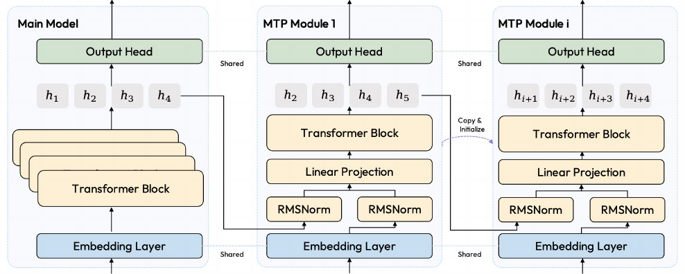
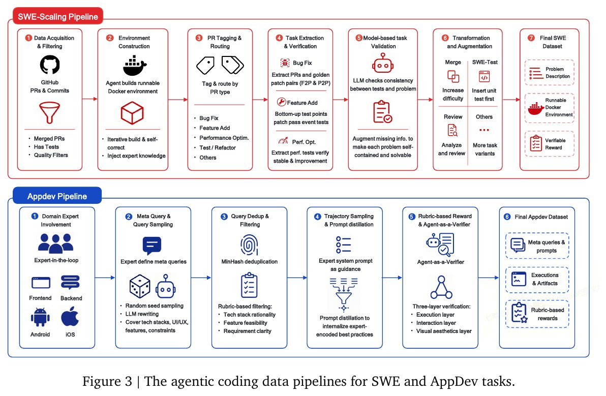
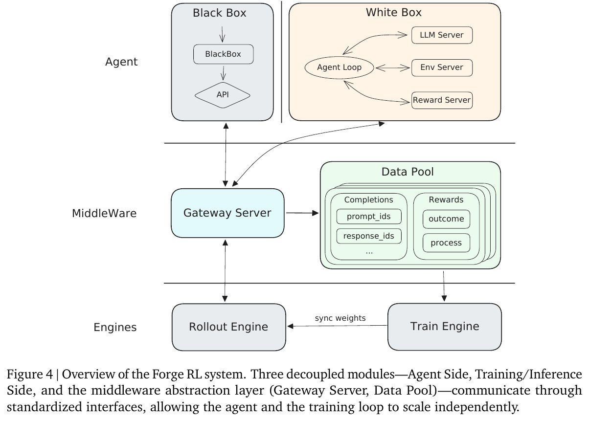
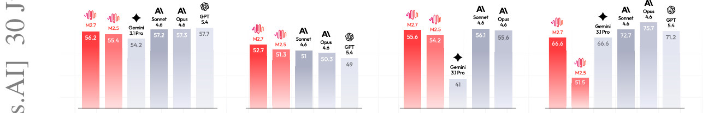

速览
五条要点
∼10B 激活，编码 Agent 贴近闭源前沿，终端与知识类仍有差距
M2.7：SWE-bench Pro 56.2（GPT 5.4 57.7）、Multi-SWE-bench 52.7（表内最高）、SWE-bench Multilingual 76.5表 4。但 Terminal-Bench 2.0 57.0 vs GPT 5.4 75.1、HLE 28.0 vs Gemini 3.1 Pro 44.7、MMLU-Pro 81.8 还低于自家 M2.5 的 85.2表 4。
回到全注意力，并公开了混合 SWA 的负面结果
M2 架构规模上，混合 SWA 预训练后 RULER 128K CWE 90.0 → 72.0、MTOB e-k ChrF 44.8 → 27.2表 2；SFT 后 SWE-verified 54.7 → 50.2、τ²-Bench telecom 32.5 → 21.0，但 IFBench、XBench-ds 反而更高表 3。作者结论：SWA 的覆盖限制主要伤长上下文，32K 内影响小§2.2.2。
数据：每条轨迹都有可执行环境 + 产物对齐的验收
SWE 从 GitHub PR 走六段管线，按 PR 类型路由不同测试奖励；AppDev 用专家 meta query + Agent-as-a-Verifier 三层验收；终端任务从 Stack Overflow 合成 Docker 环境；Cowork 四个域都按产物格式选验证信号，而不是一个通用 judge§4.1 · §4.2。
Forge：训练 / 推理 / Agent 三方解耦，黑盒 Agent 也能进 RL
Gateway + Data Pool 中间层，只收集外部可见的 (s, a, o)；Windowed FIFO（如 W = 0.3N）压住长尾轨迹导致的分布漂移；前缀树合并最高 40× 加速；RL 目标沿用 CISPO，奖励 = 过程奖励 + 完成时长奖励 + 任务结果§6。
规模与配比几乎全未披露；评测含 7 个内部集
预训练配比、SFT / RL 数据量、RL 各阶段域配比和超参都没有；表 4 的 22 项里 NL2Repo、VIBE-Pro、HyperTask、RISE、MM Claw、MEWC v2、Finance Modeling Pro 为内部基准§8.1。原文没有给出权重仓库或许可证。见 §09。
架构：标准 MoE + 全注意力，改动集中在路由和 MTP
原文没有整体架构图，唯一的结构图是图 2 的 MTP 模块。主干配置见下方示意。作者明确说：两个关键决策（FFN 怎么稀疏化、注意力怎么排）都是和替代方案对比后选的§2.2。

| 设计点 | 做法 | 原文给的证据 |
|---|---|---|
| 细粒度专家 | 更多、更小的专家，增加路由组合多样性，降低跨设备专家利用率方差§2.2.1 | 表 1：2B 激活 / 17.8B 总参 / 500B token，32 选 2 → 128 选 8，MATH 19.6 → 24.1、HumanEval 29.7 → 32.5 |
| Sigmoid 门控 | 替代 softmax top-k，每个专家独立打分，可同时高置信激活多个专家§2.2.1 | 定性（「路由更平滑」），无消融数字 |
| 专家 bias | 门控里加可学习的每专家偏置，与模型参数联合优化，隐式调节利用率§2.2.1 | 定性（辅助损失可「大幅减小」），无数字 |
| 全注意力 | 所有层 full attention + GQA，离开 MiniMax-Text-01 的 Lightning / full 交错混合§2.1 · §2.2.2 | Lightning 混合：标准基准持平、更大规模在复杂多跳推理上出现明显缺陷（无数字）；混合 SWA：表 2、表 3 |
| MTP | 预训练单个 MTP 模块，损失权重 0.3，decay 期退火到 0.1§2.3 | 表 1：MATH 19.6 → 21.3、KorBench 14.1 → 15.0 |
| MTP 复制扩展 | decay 期 1 → 3 个模块，用主模型权重初始化；先冻结主模型只训 MTP 到 loss 稳定，再联合训练§2.3 | 定性：复制初始化收敛快得多、不扰动主模型；全程冻结主模型时 MTP 最终质量更差（无数字） |
3.1 为什么不用混合注意力：原文的三条理由
评测难 §2.2.2
Text-01 时期混合模型在 MMLU、BBH、MATH、LongBench 上与全注意力持平，规模变大后复杂多跳推理明显变差。代理指标与真实下游的相关性「脆弱」，在更大规模或新分布上可能失效；有统计显著性的评测所需算力随任务复杂度大幅增长。
基础设施差距 §2.2.2
许多线性架构训练时就是访存受限；推理端对低精度存储敏感、缺原生前缀缓存支持、与投机解码的整合不清楚。
混合 SWA 实验 §2.2.2
续训数千亿到数万亿 token，改 SWA / full 比例、RoPE 设置、层内 / 层间混合，分析 induction head 与 retrieval head，加 sink token；预训练期所有变体在检索、多跳推理、in-context learning 上都掉点。
展望 §2.2.2
上下文变长、GPU 算力增长放缓后，次二次注意力会越来越重要；团队在补长上下文数据、评测方法和基础设施。
| 表 2 · 预训练 | Full | w/ SWA | 差 |
|---|---|---|---|
| HELMET ICL | 75.8 | 72.7 | −3.1 |
| MMLU | 85.5 | 85.6 | +0.1 |
| MATH | 60.3 | 60.3 | 0 |
| RULER 128K CWE | 90.0 | 72.0 | −18.0 |
| RULER 128K MQ | 99.0 | 93.0 | −6.0 |
| RULER 32K CWE / MQ | 99.0 / 99.0 | 99.0 / 99.0 | 0 |
| MTOB K-e Bleurt | 60.0 | 45.0 | −15.0 |
| MTOB e-k ChrF | 44.8 | 27.2 | −17.6 |
| 表 3 · SFT 后 | Full | w/ SWA | 差 |
|---|---|---|---|
| AIME 2025 | 86.7 | 86.7 | 0 |
| GPQA-Diamond | 75.3 | 72.7 | −2.6 |
| IFBench | 23.1 | 27.2 | +4.1 |
| SWE-verified | 54.7 | 50.2 | −4.5 |
| BrowseComp-zh | 32.8 | 28.7 | −4.1 |
| XBench-ds | 58.0 | 63.0 | +5.0 |
| τ²-Bench retail | 62.3 | 67.5 | +5.2 |
| τ²-Bench telecom | 32.5 | 21.0 | −11.5 |
「差」列为本页计算推算。表 3 另有 ARC-AGI-1 38.9 / 39.6、MMLU-Pro 80.5 / 80.1、Terminal-Bench 26.7 / 23.8、GAIA-103 53.4 / 51.5表 3。SWA 窗口大小、混合比例、模型训练 token 数原文没给。
表 1 全量：MTP 与细粒度专家消融（小模型） 表 1
| 项 | Shots | Baseline | w/ MTP | w/ Fine-Grained |
|---|---|---|---|---|
| 配置 | ||||
| 激活 / 总参 | – | 2B / 17.8B | 2B / 17.8B | 2B / 17.8B |
| 训练 token | – | 500B | 500B | 500B |
| num_experts / topk | – | 32 / 2 | 32 / 2 | 128 / 8 |
| 结果 | ||||
| MATH | 4-shot | 19.6 | 21.3 | 24.1 |
| MMLU | 5-shot | 39.8 | 39.7 | 40.2 |
| ARC-Challenge | 25-shot | 27.4 | 27.5 | 27.8 |
| KorBench | 3-shot | 14.1 | 15.0 | 14.8 |
| HumanEval | 0-shot | 29.7 | 30.1 | 32.5 |
「w/ Fine-Grained」一列是否同时带 MTP，原文未说明。正文称 MTP「across benchmarks 一致提升」，但 MMLU 39.8 → 39.7 略降§2.3 · 表 1。
数据：预训练只给轮廓，后训练管线写得很细
后训练数据分五条线：Agentic coding、Agentic cowork、推理、通用对话与写作、角色扮演§4。每条线都给了流程，但没有任何一条给出样本量或在总数据中的比例。
4.1 预训练数据
来源与过滤 §3
- 网页、学术文献、书籍、代码、结构化问答。
- 基于模型的 reward 打分 + 辅助分类器，多维度评估文档质量。
- 均衡采样：上调高质量内容权重，同时保留类别多样性。
- 代码、数学、STEM 相对自然分布显著上采样；其余为通用网页、书籍和其他领域数据。具体比例原文未披露。
长上下文 / decay 数据 §3
- 上下文 8K → 32K → 192K 多阶段扩展。
- decay 阶段共 9.3T token，含短文本 decay 数据与长上下文数据。
- 长样本主要来源：高质量代码拼接、天然长篇 PDF、主题相关文档打包。
- decay 期混入高质量数据巩固能力。各阶段 token 分配原文未披露。
| 已披露规模 | 数字 | 出处 / 说明 |
|---|---|---|
| 预训练 constant 阶段 | 19.9T token | §3 |
| 预训练 decay 阶段 | 9.3T token | §3；短文本 decay 与长上下文数据的拆分原文未披露 |
| 预训练合计 | 29.2T token | §2.1；19.9 + 9.3 = 29.2推算 |
| SWE 管线语言覆盖 | 10 种以上编程语言 | §4.1.1；任务条数原文未披露 |
| AppDev 领域 | 前端、后端、移动端、桌面、仿真等 | §4.1.2；条数原文未披露 |
| Terminal-Gym 种子 | 完整 Stack Overflow 数据集 | §4.1.3；过滤后条数原文未披露 |
| Forge 适配面 | 数百种 Agent scaffold、数千种工具调用格式 | §6.2.3 |
| SFT / RL 数据量与配比 | 原文未披露 | RL 只说「早期偏推理与通用，后期加大 Agent 与编码比例」§6.1.6 |
分类来自 §4.1–4.5 原文结构；各类的量与占比原文未披露，所以本页不画配比条。
4.2 Agentic coding：SWE 与 AppDev 两条管线（图 3）

| 阶段 | 做法 |
|---|---|
| 1 PR 收集与过滤 | 大规模爬取许可宽松的公开仓库 PR 及关联 issue（代码 diff、测试文件、问题描述）；只对最终合并的 PR 做规则质量过滤，并要求有相关测试用例 |
| 2 Agent 合成多语言 Docker | 非 Python 环境合成不稳定（依赖异构、版本冲突）→ Agent 在执行反馈下迭代生成 / 修 build 脚本并注入专家知识；重点解决编译型语言（Java、Go、Rust、C++）工具链编排、各语言构建 / 测试接口异构、仓库结构差异 |
| 3 PR 打标与路由 | bug fix、feature、性能优化、重构、测试构建等；路由的原因是不同类型需要不同形式的可验证奖励 |
| 4 测试奖励构造 | Bug fix：抽 F2P + P2P，golden patch 通过才算有效样本；P2P 保证修复不引入新 bug。Feature：F2P/P2P 不适用，改抽新增测试点并要求 golden patch 通过。性能优化：抽能在前后稳定且显著体现性能差异的 P2P 测试 |
| 5 模型校验 | PR 结构弱、测试未必完整刻画问题 → 用模型检查题面与测试一致性，必要时补全信息，得到自包含、可执行的任务说明 |
| 6 变换与增广 | Bug 注入加难度；合并相邻 commit / PR 造多步修复（类似 SWE-Smith）；SWE-Test 转换：反过来要求写一个修复前失败、修复后通过的测试；Code review：无需可运行环境，由第二个 LLM 校验一致性，属「近似可验证」任务 |
Query 合成
专家写 meta query 模板（如 React + Zustand + Tailwind、架构约束、真实场景），按类目维护种子池（UI 组件库、CSS 框架、构建工具、SaaS 集成）；meta query × 随机种子，经高温 LLM 生成多个具体 query；MinHash 近重复去重；LLM-as-a-judge 按三类 rubric 打分，低于阈值丢弃。meta query 按下游质量信号持续剪枝 / 放大§4.1.2
专家 system prompt 采样
prompt 针对早期模型的已知毛病，例如前端滥用模板化渐变背景；写明功能完整、代码完整、内容真实、美观的标准，并鼓励先写规格、维护 TODO、自测。另采集 skill 使用轨迹。Prompt 蒸馏：采样时给完整 prompt，训练时选择性删掉部分指导，让模型把最佳实践内化为默认行为§4.1.2
Agent-as-a-Verifier
把生成的应用部署到沙箱，验证 Agent 多轮交互后按专家 rubric 打分，每条标准给二元 pass/fail 并强制附证据。执行层（文件、依赖、构建、服务启动、HTTP 状态、页面无 JS 报错）是硬门槛；交互层用 Playwright 查元素、按钮表单响应、核心流程端到端；视觉美学层看布局、层级、配色、现代 UI 规范。各层总通过率作为拒绝采样的奖励§4.1.2
三类 query rubric 的子项：技术栈合理性（兼容性、选型恰当、组合有效）、功能可行性（技术可达、描述具体、UI/UX 逻辑）、需求清晰度（有效性、场景真实、表达连贯、完整性）§4.1.2。阈值数值原文未披露。
作者称正在把它演进为零人工干预的 Anything2Docker，并把 CVE-Factory 扩展到更广的自主网络安全研究§4.1.3。重试上限、通过率阈值原文未披露。
4.3 Agentic cowork：四个域，一套共同设计
共同设计 §4.2
- 任务实例化在真实、可运行的工作区上。
- 轨迹由一组轮换的强教师模型在刻意扰动的 scaffold 下蒸馏，让策略不依赖某一种工具布局。
- 验收用与产物格式对齐的验证信号，而不是单一通用 judge。
- 不能直接机器验证的子任务：采样多个候选，沿「推理—行动轨迹」和「最终产物」两个轴做两两比较，再过一遍严格的 rubric 过滤。
| 域 | 任务怎么造 | 怎么验收 |
|---|---|---|
| 深度搜索 §4.2.1 | guide-and-rewrite：从种子问题反复改写并模糊化依赖的实体，直到能区分强弱 Agent；难度连续可调 | 每个任务配显式证据规格，答案必须基于实际检索到的证据而非模型记忆；报告型问题改用 rubric judge（事实准确、透明度、不确定性处理、风险披露） |
| 办公任务 §4.2.2 | 以 GDPval 为锚，先筛出 harness 能支持的子集；再分层合成：公共职业数据库大类 → 含文化 / 地区差异的细分 → 具体任务与描述 → 真实支撑文档工作区 + 多个具体度不同的 query 版本 + 交付物结构化规格 | 多轴 rubric：正向行为、负向行为、关键错误、地区适配、推理深度；再做分类型清理，删掉捏造数据、引用或实体的轨迹 |
| 金融与表格 §4.2.3 | ① 证据驱动：先执行真实金融工具拿到轨迹，再反推严格由其蕴含的任务；② workbook walk：Agent 对种子表执行原子操作，中间状态回收为新种子，从轨迹推答案、从答案推问题，再按措辞和难度多样化。覆盖竞赛级表格、PE/VC/M&A 建模、半结构化文档重建表格 | 优先确定性值级匹配：执行产物、用外部引擎重算公式、与真值表逐格比；形式可合理变化的（如重建表、开放推理）退回 rubric / Agent 评判；每个任务在多个 scaffold 下采样 |
| 幻灯片 §4.2.4 | 生成流：多业务领域源文档，query 在描述粒度、长度、语体上变化；编辑流：真实 deck 作种子，编辑指令按粒度（元素 → 页 → 文档）、意图（内容 / 风格 / 结构）、复杂度多轴生成；偏好视觉质量好的教师 | 多信号叠加：执行成功、Agent 判功能正确、规则检查基础版式美观、渲染成图后由视觉打分器判；混入其他幻灯片库生成的轨迹，防止过拟合单一渲染工具 |
4.4 推理、通用、角色扮演、SFT
推理密集任务 §4.3
- Query 侧：现有来源整理 + 按错误分析补技能缺口的定向合成，重点补欠代表的难度段。
- Response 侧：每题多条正确解法；OOD 能力随每题回答数增加而稳定提升；按难度档测饱和，多样性低的地方加采样。
- 训练侧：固定算力下研究「扩题 vs 扩解」的配比，按阶段瓶颈校准并动态分配（比例原文未披露）。
- 质控：query 打标 + rollout 交叉比对找歧义题；verifier 做边界 case 分析；多模型表现差异交叉核对答案、标出可能的标注错误；推理过程按 rubric 打分后再入库。
通用对话与写作 §4.4
- 以带长 CoT 的高质量样本为主，作为 RL 的冷启动底座。
- 写作重风格，并接入文件系统读写结构化文档；通用问答从多个候选中按偏好选；多轮对话重指令与 rubric 遵循、跨轮追踪。
- 同时有带工具和不带工具的样本。
- 生成后过规则检查器 + 模型评估器。
角色扮演 §4.5
- 形式化为 {Worlds} × {Stories} 上、以用户偏好为条件的长程生成。
- Role-Play Bench：「不对齐可客观检测、对齐是主观的」→ 按失败模式（出戏、逻辑错误）扣分，作者称与线上参与度强相关（相关系数原文未披露）。
- 风格各异的专家模型大规模自博弈；四轴 dispersion sampling、Best-of-N、LLM judge 分段重写防模式坍缩。
- RLHF 用真实产品的隐式 / 显式反馈，经因果推断与分层去偏降噪，监控熵防 reward hacking。
SFT §5
- 目标：灌入 interleaved thinking——思考穿插在动作与观察之间，而非集中在一段 CoT 里。
- 按领域奖励信号大规模拒绝采样 + 多阶段清洗。
- 四个核心域：chat、reasoning、code、cowork；含单轮推理与多轮 Agent 交互。
- 条数、配比、轮数原文未披露。
训练配方
学习率、batch、优化器、各阶段步数原文都没给。下面只列写明的部分。
预训练 constant
- token
- 19.9T
- MTP
- K = 1，权重 0.3
代码 / 数学 / STEM 上采样；初始上下文 8K§3 · §2.3
Decay + 长上下文
- token
- 9.3T
- 上下文
- 32K → 192K
MTP 权重退火到 0.1；复制初始化扩到 K = 3，先冻主模型训 MTP，再联合训练§3 · §2.3
SFT
- 形式
- interleaved thinking
拒绝采样 + 多阶段清洗；chat / reasoning / code / cowork§5
混合域多阶段 RL
- 目标
- CISPO
- 域
- 推理 / 编码 / Agent / 通用
每阶段四域同时采样；跨阶段调域配比、上下文长度（按域扩）、难度分布§6.1.6
8K → 32K → 192K 的切换点与 constant / decay 的对应关系原文写得不完全明确：§3 说 constant 阶段之后「多阶段」扩展上下文，decay 阶段包含长上下文数据。
5.1 RL 算法
建模：边界画在生成接口 §6.1.1–6.1.3
- LLM 是策略；上下文管理、记忆、Agent 状态转移、工具执行、harness 控制流都算环境。
- 动作 = 一次完整 LLM completion（可含推理、工具调用、上下文管理操作、与子 Agent 通信）。
- 训练以单个 (st, at) 为样本，模型不需要知道 st 是追加、截断还是整段重写得来的；信用分配、优势估计仍在整条轨迹上做。
CISPO + 复合奖励 §6.1.4–6.1.5
- 沿用 MiniMax-M1 的 CISPO：IS 比值截断到 [0, 1 + εhigh] 并 stop-gradient，按总 token 数归一式 2–3；εhigh 取值原文未披露。
- 优势 = reward-to-go − 轨迹级 baseline式 4。
- 过程奖励：惩罚语言混杂、工具调用格式错误，奖励结构良好的中间推理。
- 完成时长奖励：h(Tcompletion / Tbaseline)，h 单调递减，鼓励并行工具调用式 5。
- rt = α·rprocess + β·rspeed + rperf式 7；α、β、γ、h 的具体形式原文未披露。
5.2 Forge RL 系统

白盒 vs 黑盒 Agent §6.2.3
白盒：上下文管理 st+1 = fCM(concat(st, at, ot)) 在框架内实现，训练序列能还原推理时的真实状态分布，适合滑窗截断、周期摘要等明确策略。黑盒：Agent 只把请求发给 Gateway，框架只收外部可见的 (st, at, ot)，支持深度思考循环、激进的上下文重写、层级多 Agent，无需改 Agent 代码。
推理加速 §6.2.6
- MTP 投机解码：MTP 与 RL 策略用 top-K KL 损失持续联合训练，保持草稿接受率。
- 异构 Prefill-Decode 分离：避免 MoE 混合调度的相互干扰。
- 全局 L3 KV Cache 池：基于 DFS 的分布式 KV 缓存 + 按组调度 rollout，成本感知路由在排队延迟与缓存迁移间权衡。
为什么需要 Windowed FIFO §6.2.4
rollout 时长从几秒到几小时。严格 FIFO 会被长尾卡住；完全贪心（谁先完成取谁）会让早期 batch 全是短而易的任务、难任务挤到后面，导致梯度振荡。W = 0.3N 时「保持接近 FIFO 的分布性质，同时显著降低集群空闲」——空闲降低多少原文未给数字。
前缀树合并 §6.2.5
同一 rollout 组的多轮轨迹共享大量前缀。把共享前缀的多个 completion 合成一棵树：前缀只前向一次，再分叉到各自回答段，前向后按元数据拆开、逐样本算 loss。因果注意力下与逐样本训练数学等价、零近似误差，最高 40× 训练加速并相应降显存（测量条件原文未给）。
5.3 Agent 机制：Interleaved thinking 与自我进化
Interleaved thinking §7.1
- 轨迹 τ = (r1, a1, o1, …)：每段推理都看得到全部历史式 9。
- 推理状态持久化：第 t 轮的完整输出（含 thinking）追加进历史供 t+1 轮使用式 10；丢掉 thinking 会让模型每轮重推上下文、状态漂移。
- 对比两种常见做法：推理全部前置；每轮推理后清空。
- 消融：去掉历史 thinking 块做对比，作者称在深度搜索和软件工程上差异尤其大——没有给数字。
自我进化（M2.7） §7.2 · §8.3
- Model Iteration System：「人掌舵、模型施工」；Agent Harness 由内部 M2.7 生成，零人工代码，含分层 skill、持久记忆、安全护栏、评测设施。
- RL 团队双环流程：人定实验计划，M2.7 自主读日志、诊断指标异常、改代码和配置，承担每日迭代工作量的 30%–50%。
- 内部编程 scaffold 上自主跑 100 轮「分析失败 → 改代码 → 评测」，引入循环检测等机制，内部评测 +30%。
- MLE Bench Lite：22 个比赛、3 次独立 24 小时试验，平均奖牌率 66.6%；最好一次 9 金 5 银 1 铜。
评测
对比对象：闭源 Claude Opus 4.6、Claude Sonnet 4.6（extended thinking）、GPT 5.4、Gemini 3.1 Pro（high reasoning effort），外加上一版 MiniMax-M2.5 做系列内参照。M2.7 / M2.5 开 thinking + interleaved thinking；默认 temperature 1.0、top-p 0.95§8.1。

6.1 主表（表 4 精选）
| 基准 | M2.7 | M2.5 | Opus 4.6 | Sonnet 4.6 | GPT 5.4 | Gemini 3.1 Pro |
|---|---|---|---|---|---|---|
| Coding Agent | ||||||
| SWE-bench Pro | 56.2 | 55.4 | 57.3 | 57.2 | 57.7 | 54.2 |
| SWE-bench Multilingual | 76.5 | 74.1 | 77.8 | 75.9 | 70.5 | – |
| Multi-SWE-bench | 52.7 | 51.3 | 50.3 | 51.0 | 49.0 | – |
| Terminal-Bench 2.0 | 57.0 | 51.7 | 65.4 | 59.1 | 75.1 | 68.5 |
| MLE Bench Lite | 66.6 | 51.5 | 75.7 | 72.7 | 71.2 | 66.6 |
| Search / Office & Tools | ||||||
| BrowseComp | 77.8 | 76.3 | 84.0 | 74.7 | 82.7 | 85.9 |
| GDPval-AA | 50.0 | 35.0 | 55.0 | 57.0 | 58.0 | 41.0 |
| Toolathlon | 46.3 | 38.3 | 47.2 | 44.8 | 54.6 | 48.8 |
| Reasoning & Knowledge | ||||||
| AIME 2026 | 94.2 | 87.2 | 92.5 | 92.7 | 97.0 | 88.7 |
| GPQA-Diamond | 89.8 | 85.2 | 89.6 | 87.5 | 92.0 | 94.1 |
| IFBench | 76.0 | 72.0 | 53.1 | 56.6 | 73.9 | 77.1 |
| HLE（无工具） | 28.0 | 19.0 | 36.7 | 30.0 | 41.6 | 44.7 |
| MMLU-Pro | 81.8 | 85.2 | 89.1 | 87.3 | 87.5 | 91.2 |
– = 该模型在作者 scaffold 下未报分，或当时尚未发布该基准§8.2。原表无 * / † 等记号。M2.7 在 22 项中只有 Multi-SWE-bench 为表内最高。
表 4 全量（22 项） 表 4
| 基准 | M2.7 | M2.5 | Opus 4.6 | Sonnet 4.6 | GPT 5.4 | Gemini 3.1 Pro |
|---|---|---|---|---|---|---|
| Coding Agent | ||||||
| SWE-bench Pro | 56.2 | 55.4 | 57.3 | 57.2 | 57.7 | 54.2 |
| SWE-bench Multilingual | 76.5 | 74.1 | 77.8 | 75.9 | 70.5 | – |
| Multi-SWE-bench | 52.7 | 51.3 | 50.3 | 51.0 | 49.0 | – |
| NL2Repo（内部） | 39.8 | 26.6 | 43.7 | 43.3 | 46.8 | 35.9 |
| Terminal-Bench 2.0 | 57.0 | 51.7 | 65.4 | 59.1 | 75.1 | 68.5 |
| MLE Bench Lite | 66.6 | 51.5 | 75.7 | 72.7 | 71.2 | 66.6 |
| App Dev | ||||||
| VIBE-Pro（内部） | 55.6 | 54.2 | 55.6 | 56.1 | – | 41.0 |
| HyperTask（内部） | 67.6 | 59.4 | 75.7 | 74.1 | – | 50.9 |
| Search | ||||||
| BrowseComp | 77.8 | 76.3 | 84.0 | 74.7 | 82.7 | 85.9 |
| Wide Search | 75.2 | 70.3 | 79.4 | 75.8 | 77.9 | – |
| RISE（内部） | 64.3 | 50.2 | 68.5 | 58.8 | 63.3 | – |
| Office & Tools | ||||||
| GDPval-AA | 50.0 | 35.0 | 55.0 | 57.0 | 58.0 | 41.0 |
| Toolathlon | 46.3 | 38.3 | 47.2 | 44.8 | 54.6 | 48.8 |
| MM Claw（内部） | 62.7 | 57.6 | 75.4 | 64.2 | 73.6 | 61.8 |
| MEWC v2（内部） | 63.3 | 49.8 | 62.0 | 77.2 | 76.5 | 42.2 |
| Finance Modeling Pro（内部） | 57.0 | 33.8 | 69.0 | 66.2 | 75.3 | 35.6 |
| Reasoning & Knowledge | ||||||
| AIME 2026 | 94.2 | 87.2 | 92.5 | 92.7 | 97.0 | 88.7 |
| GPQA-Diamond | 89.8 | 85.2 | 89.6 | 87.5 | 92.0 | 94.1 |
| SciCode | 47.0 | 43.0 | 51.9 | 46.8 | 56.6 | 58.9 |
| IFBench | 76.0 | 72.0 | 53.1 | 56.6 | 73.9 | 77.1 |
| AA-LCR | 72.0 | 65.0 | 70.7 | 70.7 | 74.0 | 72.7 |
| HLE（无工具） | 28.0 | 19.0 | 36.7 | 30.0 | 41.6 | 44.7 |
| MMLU-Pro | 81.8 | 85.2 | 89.1 | 87.3 | 87.5 | 91.2 |
VIBE-Pro 行 Sonnet 4.6 = 56.1、GPT 5.4 = –，与图 1 的 VIBE-Pro 栏一致。M2.5 → M2.7 原文点名的增幅：NL2Repo 约 +13、HyperTask 约 +8、RISE 约 +14、MEWC v2 +13.5、Finance Modeling Pro +23.2、GDPval-AA +15.0、MLE Bench Lite 约 +15§8.2。
6.2 评测口径（影响可比性）
| 基准组 | 设置 |
|---|---|
| SWE-bench Pro / Multilingual / Multi-SWE / NL2Repo | 内部基础设施；统一用 Claude Code 做 scaffold（覆盖默认 system prompt），GPT 5.4 例外，用其原生 CodeX scaffold；4 次平均§8.1 |
| Terminal-Bench 2.0 | 8 vCPU / 16 GB 沙箱、2 小时墙钟上限、Terminus-2 XML scaffold、verified 2.0 数据集；每模型 4 次；未重测的基线引用官方报告§8.1 |
| MLE Bench Lite | 22 个比赛，各在单张 A30 沙箱跑 24 小时，内部自我进化 scaffold（Bash + WebSearch）；取最佳验证 checkpoint 报测试集奖牌率；3 次独立试验平均§8.1 |
| VIBE-Pro | 用 Claude Code 做交互逻辑与视觉还原度的 verifier，容器化部署端到端，3 次平均§8.1 |
| HyperTask / MM Claw / MEWC v2 / Finance Modeling Pro | 专家定义 rubric，3 次；MEWC v2 为 Microsoft Excel 世界锦标赛题库中 100 道难题的内部子集；HyperTask 每任务约 100 条功能 / 步骤级需求§8.1 |
| BrowseComp / Wide Search / RISE | 共用 WebExplorer 框架，轻改 system prompt 与工具描述；token 用量超过最大上下文的 30% 时丢弃全部助手回复与工具返回以继续搜索；RISE 另开 Playwright 浏览器§8.1 |
| GDPval-AA | Artificial Analysis 在 OpenAI 公开 GDPval 数据上的重评§8.1 |
| AIME 2026 / GPQA / SciCode / IFBench / AA-LCR / HLE / MMLU-Pro | Artificial Analysis Index v4.0 协议，无工具，单样本 pass@1§8.1 |
6.3 系列内进步（图 9）
| 基准 | M2 | M2.5 | M2.7 | M2 → M2.7 |
|---|---|---|---|---|
| SWE-bench Multilingual | 56.5 | 74.1 | 76.5 | +20.0 |
| Multi-SWE-bench | 36.2 | 51.3 | 52.7 | +16.5 |
| MLE Bench Lite | 40 | 51.5 | 66.6 | +26.6 |
| VIBE-Pro | 42.4 | 54.2 | 55.6 | +13.2 |
| BrowseComp | 44 | 76.3 | 77.8 | +33.8 |
| Wide Search | 62.3 | 70.3 | 75.2 | +12.9 |
| Toolathlon | 18.8 | 38.3 | 46.3 | +27.5 |
| GDPval-AA | 34 | 35 | 50 | +16.0 |
| AIME 2025 | 78 | 86.3 | 94 | +16.0 |
| GPQA-Diamond | 78 | 85.2 | 89.8 | +11.8 |
| AA-LCR | 61 | 65 | 72 | +11.0 |
数值为图 9 柱上标注读图，本地未裁图 9；增幅列为本页计算推算，与 §8.2 正文点名的 BrowseComp +33.8、Toolathlon +27.5、MLE +26.6、GDPval-AA +16.0、Wide Search +12.9、AIME +16.0、GPQA +11.8、AA-LCR +11.0 一致。图 9 的 AIME 是 2025 版（三个版本唯一都报过的），与表 4 的 AIME 2026 不同；M2 的 BrowseComp 取 Hugging Face 官方分图 9 题注。
新在哪
不算新的：MoE + GQA + RoPE、sigmoid 门控 + 无辅助损失 bias（引 Wang et al. 2024a）、MTP（沿用 DeepSeek-V3 设计）、CISPO（MiniMax-M1 已提出）、commit 合并（类似 SWE-Smith）、金融证据驱动合成（引自团队前作）。下面只列本文给了可核对做法的点。
Agent-as-a-Verifier：让验证者去「用」产物，而不是看代码或截图
AppDev 轨迹部署进沙箱，验证 Agent 用 Playwright 多轮交互；执行层硬门槛 + 交互层 + 视觉美学层，每条标准二元判定并强制附证据，总通过率作拒绝采样奖励§4.1.2。配套的 prompt 蒸馏（采样给全 prompt、训练删部分）也写得具体。
按产物格式选验证信号 + 「轨迹 / 产物」双轴两两比较
Cowork 四域共用：表格走重算后逐格值匹配，搜索走证据规格，办公走多轴 rubric + 捏造清理，幻灯片渲染成图再视觉打分；不可验证子任务做双轴 pairwise + rubric 过滤§4.2。
Forge：黑盒 Agent 直接进 RL 训练循环
以生成接口为环境边界，训练样本是单个 (st, at)，所以 Agent 内部怎么改写上下文都不影响训练；Gateway 统一白盒 / 黑盒，作者称在数百种 scaffold、数千种工具格式上验证过§6.1.3 · §6.2.3。
Windowed FIFO 与前缀树合并
用窗口参数 W 在严格 FIFO 与贪心之间连续插值（W = 0.3N）；共享前缀的 completion 合树只前向一次，数学等价，最高 40ק6.2.4–6.2.5。
在 M2 规模上公开混合 SWA 的负面结果
预训练与 SFT 两阶段都给表：长上下文（RULER 128K、MTOB）与 >32K 的 Agent 任务掉点明显，32K 内差异小且有正有负表 2 · 表 3。少见的大规模架构负面结论。
对图像编辑数据 / 评测 / caption 的启示
M2 不是图像编辑模型，但它的数据管线本质上是「造任务 → 造环境 → 造可信奖励」，和编辑数据构建、验收、评测是同一类问题。每条先写论文怎么做，再给一条迁移建议（不是论文内容）。
D1先按任务类型路由，再配不同的验证器
论文：SWE 管线先给 PR 打标（bug fix / feature / 性能 / 重构 / 测试），因为「不同类型需要不同形式的可验证奖励」：bug fix 用 F2P + P2P，feature 用新增测试点，性能优化用前后稳定差异§4.1.1。
迁移建议，不是论文内容：编辑数据先按 op 分类（加物、删物、换背景、改文字、改属性、风格化），每类配专属自动检查：删物查目标区域的检测置信度是否消失，改文字走 OCR 比对，加物查检测框与位置描述，风格化查全局结构相似度。P2P 的对应物是「非编辑区保持」检查，所有 op 都必须过。
D2反向合成：先执行，再出题
论文：金融任务先执行真实工具再反推任务，参考答案完全由工具输出决定；表格任务做 workbook walk，从轨迹推答案、从答案推问题§4.2.3。
迁移建议，不是论文内容：对源图先执行一个确定的操作（分割 + inpaint、程序化改色、贴入渲染物体），记下操作日志，再由日志生成编辑指令和结构化 caption。指令由 diff 严格蕴含，不会出现「指令说改 A、图里改了 B」的错配；中间结果还可以回收为下一轮源图，造多步编辑。
D3指令池：模板 × 种子 → 去重 → rubric 过滤 → 按下游质量剪枝
论文：AppDev 用专家 meta query × 随机种子、高温生成，MinHash 去重，LLM judge 按技术栈合理性 / 功能可行性 / 需求清晰度打分过阈值；产出差的 meta query 被剪掉§4.1.2。
迁移建议，不是论文内容：编辑指令同样做：op 模板 × 物体 / 属性种子池生成候选，MinHash 去近重复指令，VLM 按「在这张图上可执行、描述具体、意图无歧义」三项打分过滤。按模板统计下游合格率，持续低于阈值的模板下线，并记在数据版本说明里。
D4逐步去掉提示，共用一套检查
论文：Terminal-Gym 把指令里的提示、路径、预期输出逐步抽掉，所有变体共用一套统一测试，再偏好提示少、zero-shot 通过率低的变体§4.1.3。
迁移建议，不是论文内容：同一编辑对配多档指令：带坐标 / mask 提示 → 带位置词 → 纯自然语言指代（「把左边第二个人的帽子换成红色」），三档共用同一套验收检查。按参考模型在各档上的通过率挑难的留下，避免训练集只剩显式提示的简单样本。
D5反转任务，可验证性不变
论文：bug-fix PR 改造成 SWE-Test 任务——写一个修复前失败、修复后通过的测试；另有 bug 注入、commit 合并造更难的变体§4.1.1。
迁移建议，不是论文内容：已有 (src, 指令, tgt) 可派生反向任务：tgt → src 还原、给出 src/tgt 让模型写编辑指令（反向 caption）、或标出差异区域。这些任务的真值都来自同一对数据，不增加标注成本，还能直接拿来评测 caption 模型的差异描述能力。
C1Prompt 蒸馏：采样给全规范，训练时删掉一部分
论文：采样时模型拿到完整的专家 system prompt（设计规范、先写规格、TODO、自测），训练时选择性删掉部分指导，让最佳实践成为默认行为§4.1.2。
迁移建议，不是论文内容：caption VLM 打标时给长规范（属性词表、保持区写法、禁止主观形容词），训练自研 caption 模型或编辑模型时只给短指令。抽检时专门比较「有规范」和「无规范」两种推理的 caption 差异，确认规范确实被内化，而不是只在长 prompt 下成立。
C2同一任务多个具体度版本
论文：办公任务每条生成多个具体度不同的 query 版本，覆盖不同的用户表达风格；幻灯片 query 在描述粒度、长度、语体上变化§4.2.2 · §4.2.4。
迁移建议，不是论文内容：每个编辑对存三档 caption：口语短句、标准指令、结构化 JSON（op + 目标 + 属性 + preserve）。训练时随机抽档，评测时三档分别报分，能看出模型是不是只认某一种写法。
C3证据规格 + 清掉捏造
论文：搜索任务配显式证据规格，答案必须来自检索到的证据而非记忆；办公轨迹做分类型清理，删除捏造数据、引用、实体的样本§4.2.1 · §4.2.2。
迁移建议，不是论文内容：结构化 caption 的每个对象 / 属性字段附定位证据（bbox 或区域 ID）；VLM 无法在图上定位的描述整条删掉。单设一个「幻觉清理」步骤，专查 caption 里提到但图里没有的物体、文字、人数。
C4编辑指令按三轴分层
论文：幻灯片编辑指令按粒度（元素 → 页 → 文档）、意图（内容 / 风格 / 结构）、复杂度多轴生成§4.2.4。
迁移建议，不是论文内容：编辑指令打三个标签：粒度（局部物体 / 区域 / 全图）、意图（内容 / 风格 / 几何结构）、复杂度（单 op / 多 op 组合）。按格子做分层采样和分层报分，空格子就是下一批数据要补的地方。
E1分层验收：硬门槛 → 功能 → 美学，每条附证据
论文：AaaV 执行层不过直接拒，再看交互层与视觉美学层；每条标准二元 pass/fail 并强制给证据§4.1.2。
迁移建议，不是论文内容：编辑验收三层：硬门槛（输出有效、分辨率一致、非编辑区未被破坏、没有原图直出）→ 指令逐项检查（目标对、属性对、数量对）→ 画质与美感。VLM 判官每条结论必须指出区域或给描述，没给证据的通过判定一律算不通过。
E2两条轴分开两两比较
论文：不可机器验证的子任务采样多个候选，沿「推理—行动轨迹」和「最终产物」两轴做 pairwise，再过 rubric§4.2。
迁移建议，不是论文内容：编辑 GSB 不只给一个总胜负，而是把「指令遵循」和「成片质量」拆成两轴分别比，再用 rubric 卡底线。两轴结论冲突的样本单独拿出来，往往就是判官或指令有问题的地方。
E3渲染成图再判，且别绑死单一工具
论文：幻灯片最终由视觉打分器把产物渲染成图像来判；混入其他渲染库的轨迹，防止过拟合单一工具；教师模型轮换、scaffold 刻意扰动§4.2 · §4.2.4。
迁移建议，不是论文内容：造编辑数据时轮换多个 teacher 编辑器 / 管线，记录每条样本的来源；判官也至少两家模型交叉，并定期对比判官间一致率，防止训练数据学到某一个 teacher 或判官的风格偏好。
E4短程基准持平，不代表长程无损
论文：混合注意力在 MMLU / BBH / MATH / LongBench 上持平，规模变大后多跳推理变差；SWA 在 32K 内差异小，>32K 的 Agent 任务明显掉点§2.2.2 · 表 3。
迁移建议，不是论文内容：评估编辑模型的架构或数据改动时，测试集里要有「长程」场景：多轮连续编辑后的身份 / 细节漂移、高分辨率大图、多对象同时编辑。单轮小图上的持平不足以证明改动无损。
E5失败模式比「整体好不好」更客观
论文：Role-Play Bench 基于「不对齐可客观检测、对齐是主观的」，按出戏、逻辑错误等失败模式扣分，作者称与线上参与度强相关§4.5。
迁移建议，不是论文内容：编辑评测维护一张失败模式表（身份漂移、文字乱码、非目标区改变、光影不一致、贴图感、只调色不编辑），逐项判有无并计数，而不是让判官打 1–10 分。上线后用线上反馈检查这套扣分与用户行为的相关性。
E6评测口径写到能复现
论文：逐基准写明 scaffold、试验次数、沙箱规格、超时、上下文截断规则（超过 30% 丢历史）、哪些基线是引用而非重测§8.1。
迁移建议，不是论文内容：编辑评测报告固定一节「口径」：分辨率、种子与采样次数、判官模型与版本、prompt 模板、拒答 / 安全拦截如何计分、竞品分数是自测还是引用。竞品没法用同一管线时要在表里显式标注。
局限与存疑
- 数据规模与配比几乎全空白。预训练各域比例、短文本 / 长上下文 decay 数据拆分、各后训练管线的样本量、SFT 条数、RL 各阶段域配比都没有§3 · §4 · §6.1.6。
- 权重与许可证未在原文出现。正文与页脚只写了「© 2026 MiniMax. All rights reserved」，没有权重链接或许可证；本页不据外部信息判断是否开源。
- 超参基本未给。预训练学习率 / batch / 优化器、CISPO 的 εhigh、复合奖励的 α、β、γ 和 h(·)、过程奖励细则都没有§6.1.4–6.1.5。
- 架构消融只在小模型上。表 1 是 2B 激活 / 17.8B 总参 / 500B token；sigmoid 门控、专家 bias、MTP 复制初始化、推理状态持久化都只有定性描述表 1 · §2.2.1 · §2.3 · §7.1。正文说 MTP「一致提升」，表 1 中 MMLU 39.8 → 39.7。
- 「共享 scaffold」与实际设置不一致。§8.1 先说 Agent 基准上所有模型共享同一 scaffold 与工具环境，随后又写 SWE 系列 GPT 5.4 用原生 CodeX；Terminal-Bench 2.0 未重测的基线直接引用官方报告§8.1。
- 近三分之一评测是内部集。表 4 的 22 项中 7 项为内部基准，不可复现；VIBE-Pro 用 Claude Code 当 verifier，同时被评对象里有两个 Claude 模型§8.1。
- 系列内叙述与图 9 数字不完全吻合。§8.2 说 SWE-bench Multilingual、Multi-SWE-bench「进步更平缓」，但图 9 中二者 M2 → M2.7 为 +20.0、+16.5推算，高于 AIME、GPQA、AA-LCR 与 VIBE-Pro；只有 M2.5 → M2.7 这一段平缓。图 9 还混用了 AIME 2025 与 Hugging Face 官方 BrowseComp 分图 9。
- 有退步未讨论。MMLU-Pro M2.7 81.8 低于 M2.5 85.2表 4；「所有基准都提升」只针对图 9 选的 11 项。
- M2.5 / M2.7 的结构未单独交代。229.9B / 9.8B 是 M2 的数字，M2.7 只说「∼10B 激活」；「比我们大一个数量级的前沿系统」中闭源模型规模并无公开依据§1 · §9。
- 自我进化证据为内部指标。30%–50% 工作量、100 轮 +30% 都基于内部 scaffold 与内部评测，没有任务定义和基线§7.2；§8.3 又写「数百轮」，与 §7.2 的 100 轮口径不同。
- 系统收益只给上限。前缀树合并「最高 40×」、Windowed FIFO「显著降低空闲」，均无测量条件或典型值§6.2.4–6.2.5。
图表索引
| 编号 | 内容 | 本页位置 |
|---|---|---|
| 图 1 | M2.7 与闭源基线主结果（figures/fig1.jpg，p.1，仅上排四栏） | §06 |
| 图 2 | MTP 模块结构（figures/fig2.jpg，p.7） | §03 |
| 图 3 | SWE 与 AppDev 两条 Agentic coding 数据管线（figures/fig3.jpg，p.8，两行都有） | §04.2 |
| 图 4 | Forge RL 系统总览（figures/fig4.jpg，p.20） | §05.2 |
| 图 5 | Windowed FIFO 调度（未裁图；本页按其参数重绘示意） | §05.2 |
| 图 6 | 前缀树合并（未裁图，文字引用） | §05.2 |
| 图 7 | No / Extended / Interleaved thinking 对比（未裁图，文字引用） | §05.3 |
| 图 8 | Model Iteration System 与 RL 团队双环流程（未裁图，文字引用） | §05.3 |
| 图 9 | M2 → M2.5 → M2.7 十一项基准进步（未裁图，数值读图转表） | §06.3 |
| 图 10 | M2.7 在 MLE Bench Lite 上的奖牌率随迭代变化（未裁图，文字引用） | §05.3 |
| 表 1 | MTP 与细粒度专家消融（2B / 17.8B / 500B） | §03 折叠 |
| 表 2 | 预训练：全注意力 vs 混合 SWA | §03.1 |
| 表 3 | SFT 后：全注意力 vs 混合 SWA | §03.1 |
| 表 4 | M2.7 / M2.5 vs 四个闭源基线（精选 + 全量） | §06.1 |
| 示意图 | 主干配置示意（据 §2.1–2.3）；Windowed FIFO 示意（据 §6.2.4 / 图 5）；六张柱状图（据表 4，横轴从 0 起） | §03 · §05 · §06 |